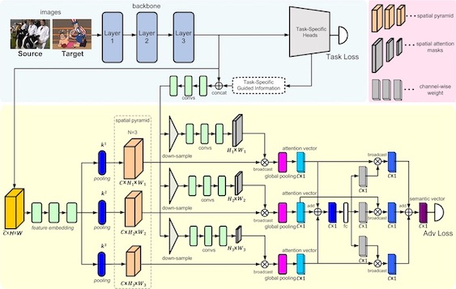
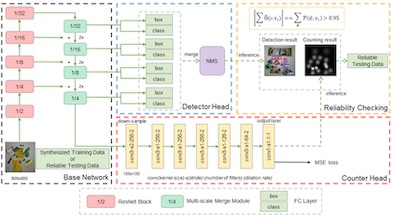
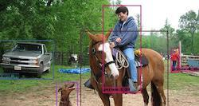
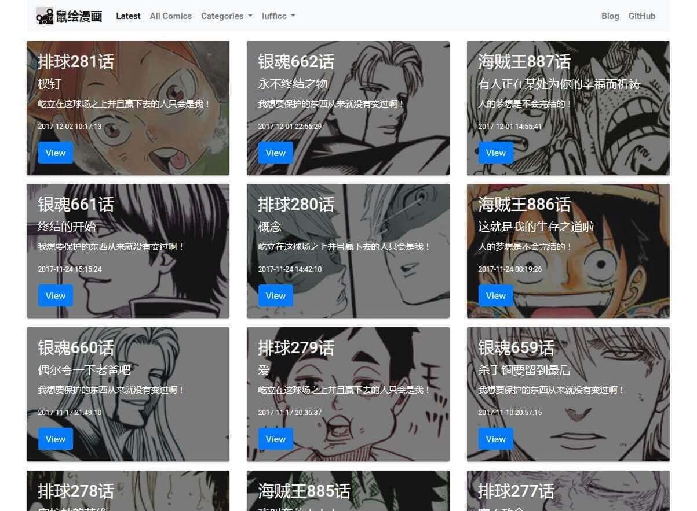
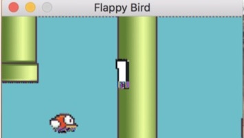

arXiv:2003.12979 [cs.CV]
I received the B.Eng. degree from University of Electronic Science and Technology of China in 2018, and then became a Master student at University of Chinese Academy of Sciences. My research interests include computer vision and deep learning, particularly focusing on object detection and Automatic checkout (ACO).
Education
2014 - 2018
B.Eng. in University of Electronic Science and Technology of China
2018 - Present
M. student in University of Chinese Academy of Sciences
Experience
2017 - 2018
Intern at SAP Chengdu, China
Publications

Spatial Attention Pyramid Network for Unsupervised Domain Adaptation

Data Priming Network for Automatic Check-Out
ACM International Conference on Multimedia (ACM), 2019
Projects

SSD
High quality implementation of SSD in PyTorch.

Xblog
A powerful and responsive blog system powered by laravel 5.5.

Vizer
Boxes and masks visualization tools.

flask_ishuhui
Comic reading website built by flask. Clear project structure.
DPNet
This repository implements DPNet with PyTorch 1.0.1.
StateLayout
A custom layout that can easily switch different states.

Deep Q Network
Toy implementation of Deep Q Network.